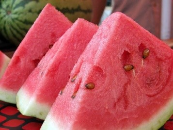
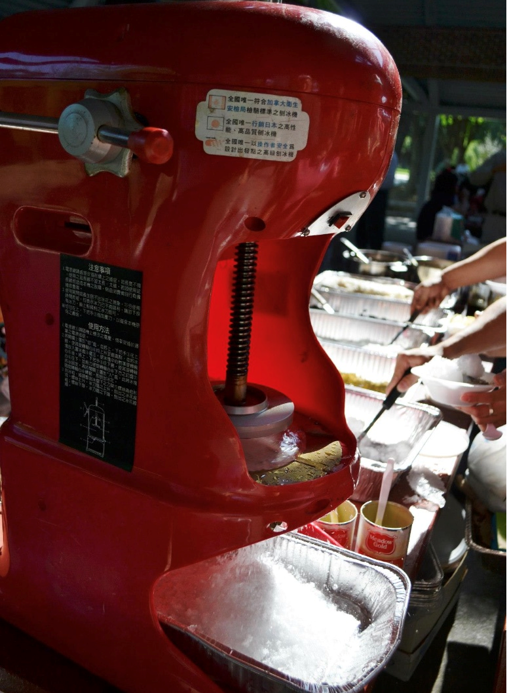

全美台灣同鄉會達拉斯分會
Taiwanese Association Of America - DFW Chapter
Recent Activities 近期活動
台灣人公共事務會(FAPA)北德州分會募款演講會
-美中貿易戰及兩大國爭取世界霸權下對台灣的影嚮-
主講者:葉望輝 (Stephen J. Yates)
台灣人公共事務會(FAPA)北德州分會訂於2019年6 月22日下午2時於達拉斯台心之家舉行2019年度募款演講會。
北德州分會今年邀請到葉望輝 (Steve Yates) 先生來演講, 主題是:美中貿易戰及兩大國爭取世界霸權下對台灣的影嚮。
葉望輝先生曾任美國副總統錢尼 (Dick Cheney) 亞洲政策的幕僚, 目前是台灣人公共事務會 (FAPA)的資深顧問。
他說「台灣經驗開啟了我的心智，讓我對全球各地人民追求自由民主的決心都能感同身受，促使我想成為一個對亞洲國家的人民有所幫助的人」 身為一個摩門教青年曾在大二時(1987年) 11 月被派到台灣工作。在台灣的那兩年他親身經歷了台灣早期威權體制度下解禁的初期，接著又目睹了台灣民間不斷大聲疾呼追求言論集會自由等運動的感動。就決心投入亞洲事務研究, 為亞洲國家的民主轉型與鞏固來盡 一份心力。
葉望輝先生的演講一定很精彩, 演講會備有茶點招待，入場免費, 歡迎所有愛䕶咱台灣的鄉親朋友擁躍參加。
- WHEN 時間：2 PM, June 22, 2019 (Saturday) 六月二十二日(星期六) 下午兩點正
- WHERE 地點：達拉斯台心之家
- ADDRESS 住址：Westgrove Plaza, 4222 Trinity Mills, #290, Dallas. Texas 75287
- 連絡 : John Hsieh 972 624 8232 Sam Tsay 972 342 8155
台灣人公共事務會是1982年在美國成立之非營利機構, 其總部設於華盛頓特區, 全美共有40多個分會, 以推動台灣的民主自由及主權獨立並參與國際社會為宗旨。FAPA經費全來自募款, 經費全來自募款，此次演講會歡迎大家踴躍捐款，捐款可以抵稅。若無法參加演講會，亦可將捐款支票抬頭註明「FAPA」，並寄至Dr. Kim Yang（Address: 1209 Queen Peggy Lane, Lewisville, TX 75056）。
北美洲台灣人教授協會聲明 - 冷靜面對民進黨總統初選
面對紛擾多時的民進黨初選以及緊接著的總統大選， 北美洲台灣人教授協會(NATPA)做以下幾點呼籲：
-
本會呼籲海外台灣人團體不要涉入民進黨初選。兩位候選人都是台派最優秀的領導人才。 每個 人依候選人的不同特質， 會有不同的喜好，台美人團體之中也有各種精湛的分析與看法，顯現 台美人的多元與開放。 但以團體之名支持特定候選人， 會產生代表性問題，對不被該社團支持 的候選人不公。 我們尤其擔心的是，已有不少台僑領袖在不知情或得到片面資訊的情況下加入 連署。
-
本會也呼籲民進黨中央承擔責任，勿讓初選紛爭的後遺症由候選人來承擔。 挑戰同黨現任總統 連任，即使在美國也是極敏感的政治遊戲。 若無公平可行的初選辦法，必然引起紛爭。做為規 則制定者與裁判者的民進黨中央， 實在應該先行規劃出一個合理的初選辦法； 出現狀況後， 也 應盡力化解雙方角力， 以免損害兩位候選人美好的形象，兩敗俱傷。 如前所述，兩位候選人都 是一時之選， 他們的能力與捍衛台灣的決心不容置疑， 都能夠帶領國人創造一個光明的台灣前 途。
-
本會也呼籲海外台灣人，多方接觸資訊並加以審慎的判斷。海外的台灣人一向關心台灣的政治 發展，在獨立建國的大方向下有各樣不同的主張與路線， 應彼此尊重，也給予台派政府最大的 支持。
-
本會更要呼籲所有海內外台灣人， 認清中國對台派分化的企圖。如眾所知 曾經有不友善國家屢 屢透過媒體與社群網路， 散佈不實言論與新聞， 影響選舉，已讓俱有強大民主基礎的英、 美社 會蒙上陰影。 對台無所不用其極的中國，會不思利用類似的伎倆來分化台派力量， 致使親痛仇 快？ 我們能不警惕嗎？
每次大選都是決定台灣前途的關鍵， 這次選舉更攸關台灣獨立自主或被中國蠶食併吞的命運。 顯然中國 的野心已按耐不住， 許多跡象顯得特別詭譎， 我們極須注意那隻中國的黑手。 我們忝為台灣人海外學界 一員，以最沉重的心情，呼籲海內外台灣人，團結所有推動台灣向前進步的力量， 認清我們共同的敵人， 同心協力， 為台灣前途打拼。
北美洲台灣人教授協會
會長 蔡靜輝
副會長 葉耀元
理事： 吳倍茂 徐新宏 陳敬銘 楊小娜 呂佳霙 陳慧玲 陳柏均
2019 年春季野餐暨肉粽節活動
為了迎接一年一度的粽子節，粽情粽義的同鄉會理事會決定在溫暖和煦的春日(六月一日星期六)，舉辦春季野餐暨肉粽節活動。同鄉會將準備肉粽、台菜、西瓜及台式剉冰。地點訂在 Farmers Branch City Hall旁邊的公園。現場有兒童遊戲區、籃球及網球場、河邊步道等，非常適合全家大小以及親朋好友郊遊同樂，希望大家扶老攜幼，帶著隨身折疊椅和風箏、飛盤、籃球等各種戶外活動遊戲來參加！為愛護地球，也歡迎大家自備餐具！我們還是會準備免洗餐具跟便當盒。

- WHEN 時間：Saturday, 6/1/2019, 4:30 PM to 8:30 PM (六月一日星期六)
- WHERE 地點：Gussie Field Watterworth Park, next to Farmers Branch City Hall
- ADDRESS 住址: 2610 Valley View Lane, Farmers Branch, TX 75234
- DIRECTION: 2610 Valley View Lane (between Hwy 35 and Josey Lane). On Valley View Lane, turn South onto William Dodson Pkwy when seeing “Farmers Branch City Hall sign”
-
ACTIVITIES (活動):
- 4:30 – 5:30 PM Registration and Outdoor Activities
- 5:30 PM Dinner Begins
- 6:30 – 8:30 PM Social and Outdoor Activities
-
Event Fees (收費):
- 2019 Members (2019會員): $15
- Non-Members (非會員): $20
- Students (學生): $10
- Kids 5 – 12 Years Old (小孩 5 – 12歲): $5
- Kids Younger than 5 Years Old (小於5 歲): Free

-
RSVP (報名):
- 網路報名
- 電話報名:
- 蔡靜燦 (Sam) 972-342-8155
- 蔡宇平 (Yuping) 469-675-3405
報名請在五月二十九日前，以便準備食物數量。如果你 要素食及素肉粽, 請在報名時通知我們。
2019 Taiwanese American
Heritage Week
Shinergy Puppet Show
活動報告
五月四日，2019 台灣傳統週訪團「新勝景掌中劇團」一行十三人帶著大批器材，浩浩蕩蕩抵達達拉斯，這是此行的第二站，也是唯一住宿鄉親家中的一站，接待家庭忙著接機與招待。 第二天一早隨即展開長達六小時的裝台，同鄉會義工始終駐守會場協助訪團， 並將外場擺設妥當。 中途雖歷經投影機故障需緊急採購，但仍有驚無險地於下午二點前準備就緒 。
就在此時觀眾陸續抵達會場，在預計開門的二點半前已聚集了近百名觀眾，很快地場內約三百席座位已是座無虛席，但是場外仍有約三百人引領而盼 。礙於規定，演藝廳廳長湯姆事前並不同意有站席，但眼見盛況空前他破例開放了ㄧ百名站位。已關上的門又重新打開，群眾帶著興奮的表情湧入，很快地演藝廳後面及兩旁都站滿了人， 但會場秩序良好無人推擠喧嘩。在辦事處陳處長致詞強調台美文化交流的重要之後，湯姆特意穿著紅色東方服飾並以中文問候觀眾，展現歡迎之意。
於是，世界首創光雕投影布袋戲「南俠ㄧ生傳」就在眾人的期盼中開演了！ 台灣知名的「夢想動畫」設計的光影，巧妙地將整個廟宇呈現在舞台上，廟宇下方ㄧ條活靈活現的龍不時舞動著身軀， 兩旁兩隻小獅頂著球玩不勝可愛。 中間上方則是布袋戲的舞台，戲偶大搖大擺地現身，操偶師以高超的技術加以巧妙的聲音表情，讓精緻的戲偶充分展現出不同的個性及動作，如：很帥的「千萬招」、 溫文儒雅的「文俠」，再加上不時來些煙霧、泡泡以及響炮等， 團隊合作的默契表露無遺。 在九十分鍾的精彩演出後， 操偶師們各自帶著約七十公分高的戲偶現身與觀眾互動、合照示範及解說。 操偶師私下表示見到觀眾中近半數是「老外」很高興， 因為可以將布袋戲不只介紹給鄉親也介紹給「老外」。「新勝景」帶來的小布袋戲偶也很吸睛， 裝有活動紀念衫及小戲偶的福袋，送出了近五十個。
場地整理乾淨後， 大夥到餐廳聚餐，疲憊的團員和義工終於可以放鬆心情談笑風生。 席間即興的口琴表演搭配未經彩排卻默契十足的合唱，ㄧ首首台灣名曲把氣氛帶到最高點，心意及理念盡在不言中流露。達福台灣同鄉會第一次協辦僑委會大型活動， 籌備過程戰戰兢兢但最後得以畫下溫馨的句點， 對此同鄉會義工深感欣慰。
謹以下方連結提供此次演出影片， 希望無法入場的鄉親也能有觀賞的機會，並期盼鄉親共同持續為家鄉台灣盡一份心力 。

為了尊重並感謝台美人的文化藝術、傳統、以及貢獻，美國國會在1999年，正式訂定每年五月的第三個禮拜，為台灣傳統週。台灣傳統週一直是僑界最備受期待的年度重點活動之一，每年都會從台灣徵選優質的表演團體來美國巡迴演出，巡演期間為期將近一個月，今年達拉斯是其中的一站。
今年邀請到的表演團體為台灣知名的新勝景掌中劇團為2019年台美人傳統週獻上精彩的布袋戲秀！新勝景掌中劇團讓沒落的傳統布袋戲，賦予了新的生命，也因應新世代潮流，他們將傳統的布袋戲與現代的動畫投影結合，並搭配光雕的新科技，設計出史無前例的『光雕投影布袋戲』，堪稱世界首例，劇團更採用了流行動感的搖滾樂，十足的將布袋戲多元化及年輕化，讓布袋戲文化再次活躍。
這次布袋戲的主題『南俠一生傳』，故事起源於武林幫派間的鬥爭打亂了武林之間的平衡，於是南俠挺身而出奔走江湖尋求各方支援，故事劇情就此展開。為了讓聽不懂台語的觀眾以及國際人士都能享受這場布袋戲，舞台會加上中英字幕，讓與會的觀眾了解劇情，劇團人員也將會在演出結束後，與台下觀眾互動，並帶來精緻的布袋戲偶贈與答題的觀眾。相信這場創新的布袋戲，將會帶給觀眾一場在視覺上以及聽覺上的享受。
- 時間：May 5th, 2019 (Sunday) 3:00 PM
- 地點：Civic Auditorium at Allen Public Library (300 N. Allen Dr., Allen, TX 75013)
免費入場 Free Admission
2019年 228紀念演講會
『特務、黑道、二二八』
- 時間：2月22日（星期五）下午7點-10點
- 地點：逹拉斯台灣基督長老教會Taiwanese Presbyterian Church of Dallas (319 La Salle Dr., Richardson, TX 75081 )
今年是二二八事件七十二年，其實長期以來我們對二二八事件的了解非常有限。最近出爐的一些新的檔案，讓我們可以看到更多我們過去所不理解的統治手法。例如，戰後約在1945年9月，最早進到台灣的其實是國民黨政府裏的情治機關，他們部署全台，滲透各地。 利用台灣的黑社會，將他們安排在基層警員跟消防隊裏，甚至在台灣各處安置線民， 監視整個社會。在二二八事件裏，這些特務系統利用事件的發生來剷除台灣社會的精英，甚至在事件之後以新的名義編造黑名單，於是這些人成為被當局監控的對象。
這些新的資料顯示我們對二二八事件的理解其實還非常有限。然而，二二八事件是台灣近代史上犧牲最慘重的事件，這個事件對台灣社會造成什麽樣影響？我們應該更多多理解事件發生的過程，從中獲得一些啟示或教訓。 演講中陳敎授會觸及大家非常關心的”轉型正義” 近展。演講會前，現場會播放二二八事件的實况紀錄影片。機會難得，希望同鄉們踴躍參加，以免向隅！
2019年 同鄉會理事名單
- 會長: 蔡宇平 (Yuping Tsai)
- 副會長: 呂維誠 (Eric Lu), 翁筱玲 (Shiny Wu)
- 文書: 周姸吟 (Yen-Ying)
- 財務: 謝美鳳 (Nancy)
- 網管: 顏俊羽 (David)
- 公關&活動: 蔡禮鴻 (Richard), 劉杏芳(Cindy), 黃敬雯 (Jean)
- 顧問: 蔡靜燦 (Sam), 楊麗香 (Leigh), 詹正治 (Raymond), 陳鳳求 (Peggy)
從今天開始，2018 年的理事們任務完成。再來有關同鄉會的事務及活動將由 2019 年的會長、副會長及理事們負責。我們非常感謝 蔡禮鴻會長在 2018 年的辛勞 ; 也預祝新的理事們，在新任蔡會長宇平的領導下，能成功承傳同鄉會的精神，服務大家；也鼓勵大家時常給予新任理事們支持及加油。
2019年農曆新年晚會
親愛的同鄉朋友們：
祝福大家新年快樂、豬事大吉！
達福台灣同鄉會誠摯的邀請各位來參加 2019 年農曆新年晚會！時間為二月九日星期六下午五點整，期待大家一起來歡喜團圓，聊天敘舊，享用豐盛美味的年菜，觀賞精彩可期的歌仔戲、說故事等等表演及聆聽耳熟能詳的台灣歌曲演唱，更不要錯過新春開運即時樂抽獎活動，大獎包含華航從洛杉磯到台北的機票及多個現金紅包，只要參加就可得到抽獎券至少一張，人人有機會抽到大獎！當晚無論中獎與否，同鄉會將贈送你（妳）一個 2019新年開運的紅包！
新年晚宴資訊
- 時間：2019 年2月9日（星期六)5:00 PM開始報到
- 地點：金華燒臘（Golden Joy B.B.Q.)；1475 E. Belt Line Rd., #260, Richardson, TX 75081；Tel: 972-234-2889
餐費
- 會員：$25
- 非會員：$35
- 學生和6歲以上 12歲以下的小孩：$15
- 6歲及6歲以下不佔位子：免費 (free)
- 包桌：一桌$300，不論包桌者是會員或非會員，一桌可坐10人，每人可有一張抽獎劵，計10張，請包桌者提早到場領取抽獎劵
同鄉會年費
- 家庭：$20
- 單身：$10
活動
- 5:00 PM–6:00 PM 報到
- 6:00 PM–7:30 PM 晚宴開始
- 7:30 PM–9:00 PM 新年晚會
線上報名
台心合唱團2018音樂會
- 時間：9月15日（星期六）下午3點
- 地點：李察遜第一長老教會 First Presbyterian Church of Richardson (271 Walton Street, Richardson, TX 75081)
好消息！好消息！台心合唱團睽違三年，即將再次舉辦音樂會！熱情的邀請鄉親們前來聆聽並給予指教！
睽違已久的台心合唱團在這次精心策劃，慎重的準備下，即將在九月十五日星期六下午三點發表他們辛苦耕耘的成果，借用李察遜第一長老教會的殿堂，帶給聽眾15首臺灣鄉親耳熟能詳的懷舊老歌以及近代作品。
從1930年代的『雨夜花』，唱到1960 年代的『夜半路燈』，反映了憂悶鬰卒苦難的民情，然後循序漸進到重獲自由民主後，盼望一缐曙光的怏樂情景歌曲，彷彿帶觀眾走入故鄉台灣的時光隧道。
台心合唱團的指揮是學有專精的劉杏芳音樂博士，在她訓練嚴謹，但不失淘氣幽默的調敎下，讓台心合唱團有了新的境界，再加上跟著台心一起成長茁壯的伴奏李家萱小姐的加持下，讓台心合唱團更顯年輕。
這場公演也精心安排幾位非常傑出的台灣音樂家新秀來表演，有周容安博士候選人的女高音獨唱，以及周偉倩博士的上低音號獨奏，還有李家萱老師的學生帶來的鋼琴四手聯彈，穿插於音樂會節目裡，希望藉由多元化以及活潑的節目安排，呈現多彩多姿，老中青三代一起同台表演的音樂會，讓觀眾們享受一個快樂的下午時光。
請鄉親們踴躍的捧場這場讓人拭目以待的音樂會。
演講消息

Dallas/Fort Worth - Places to Go, Things to Do and Sights to See